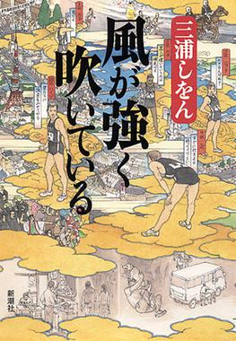

What is Hakone Ekiden
A prominent relay marathon in JAPAN
INTRODUCTION
WHAT IS THE RULE?
COURSE
ORIGIN
RELEVANT LITERATURE
Hakone Ekiden (箱根駅伝), which is officially called Tokyo-Hakone Round-Trip College Ekiden Race
(東京箱根間往復大学駅伝競走 Tōkyō Hakone kan Ōfuku Daigaku Ekiden Kyōsō),is one of the most prominent
university ekiden races of the year held between Tokyo and Hakone in Japan on January 2 and 3.
The race is telecast on Nippon Television. This two-day race from Ōtemachi to Hakone and back is
separated into five sections on each day.Due to slight variations in the courses, the first day
distance is 108.0 km while the distance on the second day is 109.9 km.
Hakone Ekiden is a round-trip relay marathon between Tokyo and Hakone.
Five sections are provided between Tokyo and Hakone each way. Each runner runs one section, alternates
with the next runner at a station. Each team has ten runners, running with their teams' sashes which are
handed over to the next runner on the team at each station.
If a runner cannot get to a station within twenty minutes after the top runner reached it, the next runner
starts with a substitute sash. The time difference is added to the goal time.
Participation
Twenty universities, which belong to The Inter-University Athletic Union of Kanto (関東学生陸上競技連盟 Kantō
gakusei rikujō kyōgi renmei), can participate in this Ekiden. Ten of them are seeded teams that qualify by
virtue of finishing in the top ten the previous year. Nine more teams qualify through their team results at
the Hakone Ekiden Yosenkai, a 20 km qualifier held in the October preceding the race. A final select team,
the Kanto Region University Student United Team (関東学生連合チーム Kantō gakusei rengō cheemu), made up of
top-placing individuals at October's Yosenkai 20 km Road Race from universities that do not qualify for Hakone
as teams.[4] The 2014 race did not include a select team, and before 2014, the select team was called the
Kanto Region Select Team (関東学連選抜チーム Kantō gakuren senbatsu cheemu), and were also constituted by a
selection of top runners from universities that did not qualify as one of the 19 participating teams.
Seed Rights
Teams above 11th place get seeded and can participate in the Hakone Ekiden the next year.
Forfeiture
If a runner retires en route to a station because of an accident, his team is treated
as retired. Although runners for following sections may run, their times are not officially recorded.
First half, January 2
The first section (21.4 km) From Ōtemachi, Tokyo to Tsurumi, Yokohama
This is one of the most important sections because the first runner’s rank affects how the team performs
in this marathon relay. Teams usually enter a strong runner run in this section. The whole course is flat,
but there are some slopes at Shin-Yatsuyamabashi (新八ツ山橋) and Rokugōbashi (六郷橋).
The second section (23.2 km) From Tsurumi to Totsuka
Traditionally, the fastest runner in each team usually runs on this course. This course is very severe because there are two long and steep slopes.
The third section (21.5 km) From Totsuka to Hiratsuka
In this section, there are strong sea winds, though considered scenic, with Mt. Fuji and Sagami Bay as opposing backdrops. Many spectators go to this section to cheer runners. The number of them is the largest of all sections.
The fourth section (18.5 km) From Hiratsuka to Odawara
This section is the shortest of all sections. There are many slopes, so it is difficult for runners to keep their pace.
The fifth section (23.4 km) From Odawara to Lake Ashi, Hakone
This section is the longest one. Runners must run up steep slopes, which is about 800m high. This is considered the most severe section.

Second half, January 3
The sixth section (20.8 km) From Lake Ashi, Hakone to Odawara
At first runners run up a little, then they run down steep slopes. These slopes are very hard on runners' legs, so a lot of them slow down just before goal. They start running at about 8 o’clock. To protect themselves against the cold, many of them wear uniforms with long sleeves.
The seventh section (21.3 km) From Odawara to Hiratsuka
The difference of temperature between the start and the goal is larger than any other section. This course is almost flat until 9 km, but after that there are some ups and downs. The record of this section is the oldest of all sections.
The eighth section (21.5 km) From Hiratsuka to Totsuka
The first half of this section is almost flat, but second one has a slope so-called Yugyōji-no-saka (遊行寺の坂) which causes runners severe difficulties. Some teams which run around the 10th place start to worry whether they are seeded or not.
The ninth section (23.2 km) From Totsuka to Tsurumi
This section is the longest in the second day’s sections. There are many downs, so runners must control their speed. At this section, many teams reverse their places.
The tenth section (23.1 km) From Tsurumi to Otemachi, Tokyo
This is the last section of Hakone marathon race (Ekiden). This course is almost flat, but sometimes a strong wind blows among the very tall building. There are many fans who cheer runners, so runners feel a strong pressure not to disappoint the fans.
Hakone Ekiden was started in 1920.[6] Shizo Kanaguri, who is known as the father of the Japanese marathon, conceived the idea. His enthusiastic idea of bringing up a runner who could compete in the world became the driving force of establishing Hakone Ekiden. When Kanaguri was a Tokyo Koto Shihan school (Koshi) student, he participated in Olympic Games in Stockholm in 1912 as one of the representative Japanese marathon runners. He had to give up his race on the way, however.
In the meantime, the first ekiden, Tokaido ekidentohokyoso (東海道駅伝徒歩競走) was held in 1917 between Sanjō Ōhashi, Kyoto and Ueno Shinobazunoike (上野不忍池) Tokyo, celebrating 50 years after Tokyo became the capital. This race was a big relay race between Kyoto and Tokyo (516 km) held by Yomiuri Shimbun for three days. It succeeded and became the original form of Hakone Ekiden. Kanaguri was influenced by the success of the race and persuaded many universities that they should race in the Hakone Ekiden. As a result, Waseda Univ., Keio Univ., Meiji Univ. and Tokyo Kōshi replied to his offer and Hakone Ekiden started. Hakone Ekiden was started with great energy of the pioneers in Japanese sports society. It started during World War I, so industrial areas gradually expanded to the west and the Tokaido road was widened. Reflecting this active atmosphere, the Japanese sports society, including ekiden one, were developing great challenging spirits at that time.
Run with the Wind
is a Japanese novel by Shion Miura that narrates the build-up and training of a team to run the Hakone Ekiden.
It has been adapted to manga, live action film adaptation, and anime television series by Production I.G began airing on October 2, 2018.

Synopsis of Run with the Wind
Kakeru, a former elite runner at high school, is chased for stealing food. He is saved by a Kansei University student Haiji, who is also a runner. Haiji persuades Kakeru to live in the old dormitory "Chikuseisou" where he plans to team up with fellow residents to enter the Hakone Ekiden relay marathon, one of the most prominent university races in Japan. Kakeru soon finds out that all of the residents except for Haiji and himself are complete novices.